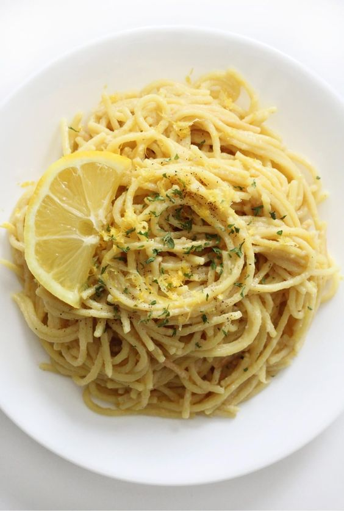

it's creamy and wonderful and it's lemon and lime.
Serve with cubed cooked meat or veggies,if desired.
Enjoy!
In a sauce pan or skillet large enough to hold the pasta when it is done, combine the
nutter, cream, and beef broth or bouillon and simmer over medium heat until
reduced by aboout half. Add the lemon juice, lemon and lime zest and set aside
bring a large pot of lightly salted water to a boil, Add pasta and cook for 8 to 10 minutes or until al dente; drain. Toss pasta with sauce; serve.